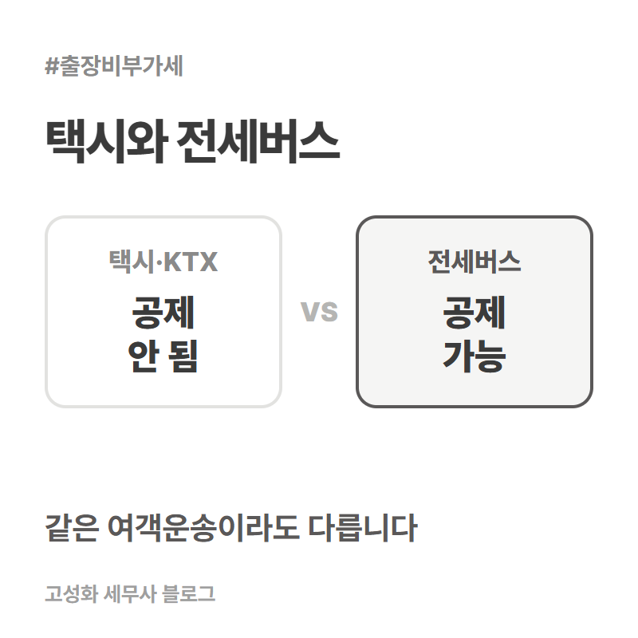
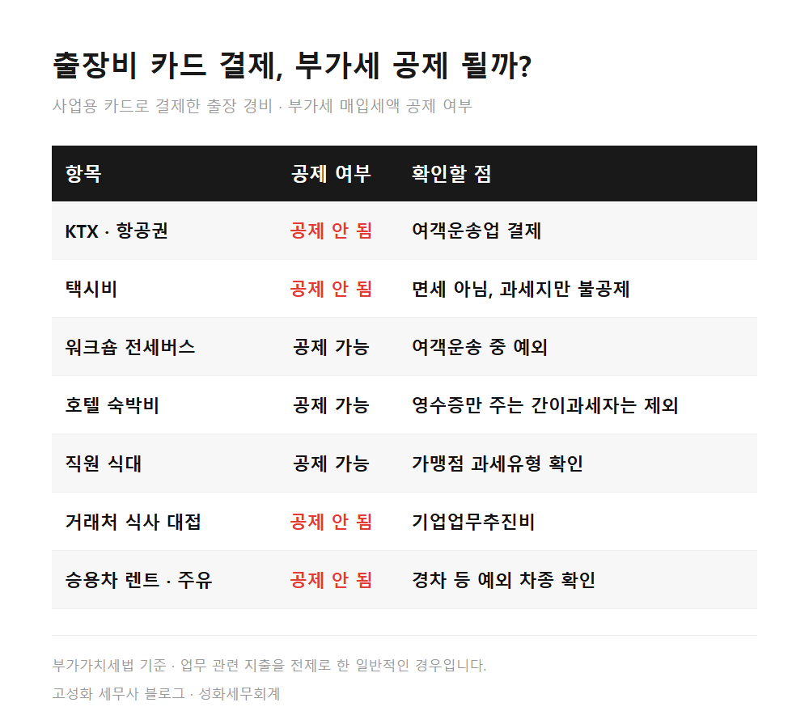

← 세무칼럼 목록
부가세·개인사업자

출장비 부가세 공제 KTX 택시 숙박 식대 어디까지
사업용 카드로 결제한 출장비 중 KTX·항공권·택시비는 영수증에 부가세가 찍혀 있어도 매입세액 공제가 되지 않습니다. 호텔 숙박비와 직원 식대는 공제가 되고, 거래처 식사 대접과 승용차 렌트·주유비는 공제되지 않습니다.
이번 2기 부가세 예정신고 기한은 10월 26일입니다. 25일이 일요일이라 하루 미뤄졌습니다. 신고서를 내기 전에 카드 내역에서 아래 다섯 가지를 확인해보세요.
1. KTX·항공권·택시비는 공제에서 빼야 합니다
세법은 여객운송업을 세금계산서 대신 영수증을 주는 업종으로 정해두었고, 이 업종에서 받은 카드 영수증은 매입세액 공제 대상에서 뺐습니다.
한눈에 보기


정리하면
출장비는 한 건 한 건이 크지 않아서 카드 내역을 통째로 공제에 넣고 넘어가기 쉽습니다. KTX나 택시처럼 처음부터 공제가 안 되는 결제가 섞여 들어가면, 나중에 바로잡으면서 그만큼을 다시 내야 할 수 있습니다.
기장을 맡긴 곳이 있으시다면, 출장이 많았던 달의 카드 내역이 어떻게 처리됐는지 한 번 물어보시는 것으로 충분합니다. 직접 신고하시는데 판단이 애매한 결제가 있다면 성화세무회계로 문의 주세요.
본문 전체와 근거 조문은 블로그에서 확인하실 수 있습니다.